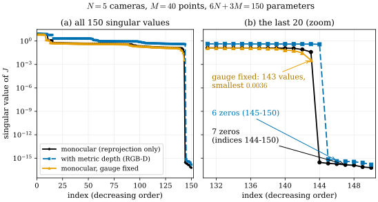

28.3 Bundle Adjustment on a Manifold
Goals
- bundle adjustment를 product manifold \(\mathrm{SE}(3)^N \times (\R^3)^M\) 위의 최소제곱으로 쓰고, retraction을 쓰는 Gauss–Newton/LM과 Schur complement의 구조를 설명할 수 있다.
- monocular BA의 residual이 장면 전체의 similarity에 대해 불변이라는 것(gauge freedom)을 보이고, \(J^{\mathsf T}J\)의 null space가 정확히 7차원이며 그것이 \(\mathrm{Sim}(3)\) orbit의 tangent space라는 것을 수치와 generator로 확인할 수 있다.
- gauge를 고정하는 방법(COLMAP이 쓰는 방법 포함)과 LM damping이 하는 일을 비교하고, quotient manifold의 관점으로 해석할 수 있다.
- monocular SLAM의 scale drift를 설명하고, \(\mathrm{Sim}(3)\) pose graph가 loop를 닫는 이유를 시뮬레이션으로 보일 수 있다. BARF와 nerfstudio의 pose 최적화를 이 언어로 읽을 수 있다.
Prerequisites
- Section 28.1: \(\mathrm{Sim}(3)\) (28.1.1), 장면 전체의 similarity가 사진을 바꾸지 않는다는 Exercise 28.1.1, adjoint (28.1.8)
- Section 28.2: left perturbation(Definition 28.2.1), reprojection Jacobian (28.2.3), retraction, 상자 “과잉 parametrization은 \(J^{\mathsf T}J\)에 null space를 만든다”
- Section 0.8: Riemannian optimization과 retraction. Definition 0.6.5: differential의 kernel
- 3D vision 쪽: SfM의 bundle adjustment, Gauss–Newton과 Levenberg–Marquardt, keyframe 기반 monocular SLAM
Motivation
Section 28.2의 끝에서, quaternion 4개로 회전을 parametrize하면 \(J^{\mathsf T}J\)에 null space가 생기지만 3-parameter retraction으로 바꾸면 사라진다는 것을 보았다. 그리고 parametrization을 어떻게 바꾸어도 사라지지 않는 null space가 있다고 예고했다. 이 절의 주제가 그것이다.
COLMAP으로 같은 사진들을 두 번 복원하면, 두 결과는 대개 회전·이동·크기가 다르다. 둘 다 맞다. 사진은 장면의 절대적인 위치, 방향, 크기를 담고 있지 않기 때문이다 [Triggs00]. 이 사실이 최적화와 SLAM에서 어떤 모습으로 나타나는지가 질문이다.
- bundle adjustment는 어떤 manifold 위의 최소제곱이고, Gauss–Newton은 그 위에서 어떻게 움직이는가?
- “사진이 정하지 못하는 방향”은 몇 개이고, \(J^{\mathsf T}J\)의 어느 null space로 나타나는가? 그 방향들은 기하적으로 무엇인가?
- 그 방향을 고정해야 하는가? monocular SLAM이 긴 궤적에서 크기를 잃는 scale drift는 같은 현상인가?
- NeRF와 3DGS의 pose 최적화는 이 그림에서 무엇을 하는가?
Bundle Adjustment as Least Squares on a Product Manifold
카메라 \(N\)대와 점 \(M\)개가 있고, 점 \(j\)가 카메라 \(i\)에 \(u_{ij}\)로 관측되었다고 하자(관측된 쌍의 집합을 \(\mathcal{O}\)로 쓴다). 미지수는 pose \(T_i = T_{cw} \in \mathrm{SE}(3)\)와 점 \(X_j \in \R^3\)이다. intrinsics가 미지수이면 \(\R^k\) 인수가 하나 더 붙을 뿐 아래 논의는 같다. 미지수 전체는 product manifold
의 점이고, bundle adjustment는 \(E\)를 최소화한다. 실무에서는 \(\abs{\cdot}^2\) 대신 Huber 같은 robust loss를 쓰지만 기하는 같다.
Gauss–Newton과 LM은 현재 점 \(x\)에서 local 좌표를 잡는 데서 시작한다. 카메라에는 Definition 28.2.1의 left perturbation(camera frame, g2o와 같은 규약), 점에는 덧셈을 쓰면 retraction은
\[ \begin{aligned} \mathrm{retr}_x(\delta) = \big(&\mathrm{Exp}(\xi_1)T_1, \dots, \mathrm{Exp}(\xi_N)T_N, \\ &X_1 + \delta X_1, \dots, X_M + \delta X_M\big) \end{aligned} \]
이고 \(\delta = (\xi_1, \dots, \xi_N, \delta X_1, \dots, \delta X_M) \in \R^{6N + 3M}\)이다. residual을 쌓은 \(r(x)\)를 \(r(\mathrm{retr}_x(\delta)) \approx r + J\delta\)로 linearize하면(\(J\)의 각 블록은 (28.2.3)), 한 step은
이다. \(\lambda = 0\)이면 Gauss–Newton, \(\lambda \gt 0\)이면 Levenberg–Marquardt이고 \(D\)는 \(I\)나 \(\diag(J^{\mathsf T}J)\)다. 매 step마다 chart를 새로 잡으므로 회전이 singularity 근처에 갈 일이 없다(Section 28.1의 상자).
\(J^{\mathsf T}J\)를 카메라 블록과 점 블록으로 나누면 \(\begin{pmatrix} B & E \\ E^{\mathsf T} & C \end{pmatrix}\)이다. residual 하나는 카메라 하나와 점 하나에만 의존하므로, \(C\)는 \(3 \times 3\) 블록이 \(M\)개 놓인 block-diagonal matrix다. 그래서 점을 먼저 소거한 \((B - EC^{-1}E^{\mathsf T})\,\delta_{\mathrm{cam}} = \cdots\)(Schur complement, reduced camera system)를 풀고 점의 update는 블록마다 따로 구한다 [Triggs00]. 아래 예(\(N = 5\), \(M = 40\))에서는 \(150 \times 150\) 계가 \(30 \times 30\) 계로 줄어든다. factor graph로 쓰면 변수는 manifold 위의 pose와 점, factor는 residual이고, 점 변수를 먼저 소거하는 것이 바로 이 Schur complement다 [Dellaert17]. GTSAM은 변수마다 Section 28.2의 표에 적은 retract를 쓴다.
Gauge Freedom: the Sim(3) Orbit
장면 전체에 similarity를 적용해 보자. Exercise 28.1.1에서 이미 본 계산을 manifold \(\mathcal{M}\) 위의 group action(군작용)으로 쓴 것이다. group의 원소 \(S\)마다 \(\mathcal{M}\)의 diffeomorphism \(x \mapsto S\cdot x\)가 하나씩 있고 \((S_1S_2)\cdot x = S_1\cdot(S_2\cdot x)\)인 것을 말한다. 점 \(x\)를 group 전체로 옮긴 집합 \(\mathrm{Sim}(3)\cdot x\)를 \(x\)의 orbit(궤도)이라 한다.
Proposition 28.3.1 (the Sim(3) gauge action). \(S = (sQ, u) \in \mathrm{Sim}(3)\)에 대해 \(\mathcal{M}\) 위의 map
는 \(\mathrm{Sim}(3)\)의 action이고, 모든 camera 좌표를 \(s\)배 한다: \(T_i'X_j' = s\,T_iX_j\). 투영은 \(\varphi(sx) = \varphi(x)\)이므로 모든 residual이 변하지 않는다. 따라서 \(E\)는 각 orbit 위에서 상수이고, orbit의 tangent space는 \(J\)의 kernel에 들어간다. infinitesimal similarity \((\omega, u, \sigma)\)(회전 3, 이동 3, scale 1)가 주는 tangent vector는 위의 local 좌표로
이다(\(\xi_i = (v_i, \omega_i)\)). 이 7개의 generator가 linearly independent이면 orbit은 7차원이고 \(\dim\ker J \ge 7\)이다.
Derivation. \(T_i'X_j' = R_iQ^{\mathsf T}(sQX_j + u) + s\,t_i - R_iQ^{\mathsf T}u = s(R_iX_j + t_i)\)이다. action임은 두 similarity를 차례로 적용한 결과가 곱의 적용과 같음을 확인하면 된다(verify). generator는 \(Q = \mathrm{Exp}(\varepsilon\omega)\), \(s = e^{\varepsilon\sigma}\), \(u \to \varepsilon u\)로 두고 \(\varepsilon\)의 1차 항을 읽는다. 회전 부분 \(R_iQ^{\mathsf T} \approx R_i - \varepsilon R_i[\omega]_\times = (I_3 - \varepsilon[R_i\omega]_\times)R_i\)에서 \(\omega_i = -R_i\omega\)이다. translation은 \(t_i' - t_i \approx \varepsilon(\sigma t_i - R_iu)\)이고, left perturbation \(\mathrm{Exp}(\xi_i)T_i\)의 translation이 \(t_i + \omega_i \times t_i + v_i\)이므로 \(v_i = \sigma t_i - R_iu - \omega_i \times t_i\)이다.
이것은 Section 27.2에서 본 복원의 모호성(calibration을 알면 \(\mathrm{Sim}(3)\), 모르면 \(\mathrm{PGL}(4)\))을 bundle adjustment의 parameter manifold 위에서 본 것이다. 먼저 orbit 위를 유한하게 움직여 보자(Figure 28.3.1). 그다음 무한소로, 곧 \(J\)의 singular value로 본다(Figure 28.3.2).
![두 패널. 왼쪽 (a)는 world x-z 평면의 top view다. 회색 점 40개가 (0, 5) 근처에 모여 있고, 그 아래 z ≈ 0 근처에 검은 삼각형 카메라 다섯 개(1, 3, 5 번호)가 위쪽을 향해 놓여 있다. 오른쪽 위 (3.5, 6) 근처에 연한 주황 점 40개가 비스듬히 퍼져 있고, 주황 삼각형 카메라 다섯 개가 그 아래로 돌아가고 커진 배치로 놓여 있다. 왼쪽 위에 s = 1.4, Q: 25° about y, u = (0.6, 0.2, −0.5)라 적혀 있다. 오른쪽 (b) image of camera 3: 검은 점들과 주황 동그라미들이 정확히 겹쳐 있고, 회색 x표들은 왼쪽으로 크게 어긋나 있다. 왼쪽 아래 범례: points X_j, moved points sQX_j + u, cameras (apex = center), moved cameras. 오른쪽 아래 범례: original scene original camera, moved scene moved camera, moved scene original camera.](figures/fig-28-3-1-gauge-orbit.svg)
Figure 28.3.1의 (a)에서 두 복원은 누가 봐도 다른 장면이다. 주황 쪽은 25° 돌아갔고, 1.4배 커졌고, 옆으로 옮겨졌다. 그런데 (b)에서 카메라 3이 찍은 사진은 두 경우에 똑같다. 회색 \(\times\)가 보여 주듯 이것은 점과 카메라가 같은 similarity로 함께 움직였기 때문이다. 이제 \(J\)의 singular value를 보자.

Figure 28.3.2의 (a)에서 세 곡선은 대부분의 구간에서 비슷한 높이다. 차이는 오른쪽 끝에 있다. (b)로 확대하면 검은 곡선은 143번째 값 0.039 다음에 \(3 \times 10^{-16}\)으로 떨어지고, 그 높이에 정확히 7개가 있다. 이 7개의 right singular vector가 펼치는 공간을 (28.3.4)의 7개 벡터와 비교하면, generator를 null space로 projection했을 때 남는 부분이 generator 크기의 \(10^{-14}\) 이하다. 곧 null space는 정확히 \(\mathrm{Sim}(3)\) orbit의 tangent space다. 파란 곡선(depth를 잰 경우)의 0은 6개다. metric depth는 scale을 정하므로 scale generator \(\sigma\)가 \(J\)의 kernel에서 빠진다. 주황 곡선은 gauge 7개를 지우면 남은 문제가 잘 정해진다는 것을 보인다.
Verification: verify/v-28-3-bundle-adjustment.py
Fixing the Gauge, or Not
\(J^{\mathsf T}J\)가 singular이므로 Gauss–Newton의 (28.3.2)를 \(\lambda = 0\)으로 그대로 풀 수는 없다. 해결법은 둘이다.
- gauge를 고정한다. 7개의 자유도를 parameter에서 지운다. 가장 흔한 방법은 첫 카메라의 pose 전체(6)와 둘째 카메라의 translation 성분 하나(1)를 상수로 두는 것이다. COLMAP의 global BA(
sfm/incremental_mapper.cc의 global BA와controllers/bundle_adjustment.cc)는 position prior가 없으면 이 gauge(BundleAdjustmentGauge::TWO_CAMS_FROM_WORLD)를 쓴다.src/colmap/estimators/bundle_adjustment_ceres.cc의FixGaugeWithTwoCamsFromWorld는 첫 frame의 pose block을 상수로 두고, 둘째 frame의 translation에서 두 frame 사이 baseline의 성분이 가장 큰 좌표 하나를SubsetManifold로 고정한다. 그런 쌍을 찾지 못하면 linearly independent인 점 세 개를 고정하는FixGaugeWithThreePoints로 넘어간다. local BA는 처음부터 이THREE_POINTSgauge를 쓴다. Figure 28.3.2의 주황 곡선이 앞의 방법이다(여기서는 left perturbation 좌표의 translation 성분 하나를 지웠다). - gauge를 그대로 두고 LM damping에 맡긴다. \(\lambda \gt 0\)이면 \(J^{\mathsf T}J + \lambda I\)는 invertible이다. 그리고 그 해는 gauge 방향의 성분을 갖지 않는다. \(J^{\mathsf T}r\)은 \(\ker J\)에 orthogonal이고(\(\inner{J^{\mathsf T}r}{n} = \inner{r}{Jn} = 0\)), \(J^{\mathsf T}J + \lambda I\)는 \(\ker J\)와 그 orthogonal complement를 각각 자기 자신으로 보내기 때문이다(Exercise 28.3.3). 곧 LM의 step은 local 좌표의 Euclidean inner product로 orbit에 수직이다. Ceres(COLMAP이 쓰는 solver)처럼 \(D = \diag(J^{\mathsf T}J)\)로 damping하면 step은 \(\inner{u}{w}_D = \inner{u}{Dw}\)로 orbit에 수직이고, Euclidean으로는 수직이 아니다(아래 예에서 \(\lambda = 10^{-3}\)이면 step의 Euclidean gauge 성분 비율이 0.41이고, \(D\)-inner product로는 \(10^{-14}\) 이하다). COLMAP 코드에도 gauge를 고정하지 않는 편이 더 빠를 수 있다는 TODO 주석이 있다.
noise를 넣은 같은 예에서 두 방법을 비교했다(관측 noise 0.002, 카메라와 점을 흔든 같은 초기값). gauge를 고정한 Gauss–Newton과 gauge를 둔 LM(\(\lambda = 10^{-3}\), \(D = I\))은 둘 다 RMS reprojection error 0.001557에 수렴한다. LM의 step에서 gauge 방향 성분의 비율은 \(10^{-10}\) 이하였다. 그러나 두 결과의 점들은 같지 않다. 하나를 다른 하나에 similarity로 맞추면 남는 차이가 \(3 \times 10^{-7}\)이고, 그 similarity의 scale이 1.063이다. 같은 orbit 위의 다른 두 점, 곧 같은 해의 다른 두 대표다.
이 상황은 quotient manifold(몫다양체)의 말로 정리할 수 있다(여기서는 정성적으로만 쓴다). 사진이 정하는 것은 \(\mathcal{M}\)의 점이 아니라 orbit \([x] = \mathrm{Sim}(3)\cdot x\)이고, 그 orbit들의 공간 \(\mathcal{M}/\mathrm{Sim}(3)\)은 action이 자유롭고 적당히 좋은 곳에서 \(6N + 3M - 7\)차원 manifold다. gauge 고정은 orbit마다 대표 하나를 고르는 slice(orbit에 transversal한 submanifold, Triggs 등의 gauge cross-section)를 정하는 것이고, LM의 step은 orbit에 수직인(horizontal) 방향으로 quotient 위의 step을 끌어올린 것으로 볼 수 있다. 여기서 “수직”은 local 좌표와 \(D\)가 정하는 inner product에 대한 말이다. parameter 공간에는 고유한 orthogonality가 없으므로, 어떤 방향이 orbit에 수직인지는 metric을 고르는 순간 정해진다 [Triggs00]. 이것은 해석이지만 실무적인 결론이 있다. 불확실성(covariance)은 orbit 방향으로는 무한대이므로, \(J^{\mathsf T}J\)의 역은 gauge를 고정한 뒤에야 정해지고 그 값은 어떤 gauge를 골랐는지에 달려 있다. 두 복원의 카메라 위치 불확실성을 비교하려면 같은 gauge를 써야 한다 [Triggs00].
Verification: verify/v-28-3-bundle-adjustment.py
Scale Drift and Sim(3) Loop Closure
monocular SLAM은 지도 전체를 한 번의 BA로 풀지 않는다. 최근 keyframe 몇 개의 window를 local BA로 다듬으며 나아간다. window마다 gauge가 7차원이므로, 이웃한 window는 회전·이동·scale을 앞의 window에 맞춰 이어 붙인다. 그 이음새에서 오차가 조금씩 쌓인다. 회전과 이동의 오차는 SE(3) odometry에서도 쌓이지만, scale은 monocular에만 있는 자유도라 아무것도 그것을 붙잡지 못한다. 그래서 긴 궤적에서 지도의 크기가 서서히 변한다. 이것이 scale drift다 [Strasdat10]. Strasdat 등은 monocular SLAM의 gauge가 근본적으로 7차원이라는 점에서 출발해, keyframe의 pose를 \(\mathrm{Sim}(3)\)의 원소로 두는 pose graph를 제안했다. ORB-SLAM의 loop closing도 같은 구조다 [MurArtal15].
- loop가 감지되면 현재 keyframe과 loop keyframe의 지도점을 맞춰 두 keyframe 사이의 similarity를 구한다(ORB-SLAM은 3D-3D 대응에 Horn의 방법). scale까지 포함한 7자유도의 측정이다.
- keyframe마다 \(\mathrm{Sim}(3)\)의 vertex \(X_k\)를 두고, odometry edge는 지금의 상대 pose에 scale 1을 붙인 similarity로, loop edge는 위에서 구한 similarity로 둔다. edge의 residual은 tangent space의 7-vector다:
- \(\sum e_{ab}^{\mathsf T}\Lambda_{ab}e_{ab}\)를 LM으로 최소화한다. 이 문제에도 7차원 gauge가 있으므로 vertex 하나를 고정한다. ORB-SLAM은 loop keyframe을 고정하고, \(\Lambda_{ab}\)를 identity로 둔다.
Strasdat의 식 (23)과 ORB-SLAM의 식 (8)은 world-to-camera similarity로 같은 꼴을 쓴다. 여기서는 keyframe에서 지도로 가는 방향으로 썼고 구조는 같다. 이것을 SE(3) pose graph와 비교한 시뮬레이션이 Figure 28.3.3이다.
![두 패널. 왼쪽 (a) top view of the loop: 중심 (0, 10), 반지름 10인 굵은 회색 원(ground truth)이 (0, 0)에서 시작한다. 검은 점선(odometry only)은 같은 곳에서 출발해 점점 작아지는 spiral을 그리며 (0.1, 3.7) 근처에서 끝나고 'odometry end: gap 3.8' 주석이 있다. 파란 곡선(SE(3) pose graph)은 원점으로 돌아와 닫히지만 위쪽이 눌려 세로 지름이 약 17인 찌그러진 원이다. 주황 곡선(Sim(3) pose graph)은 회색 원과 거의 겹친다. 오른쪽 (b) scale along the loop: 가로축 keyframe k(0–60), 세로축 scale. 검은 곡선(true local scale s_k)이 1에서 출발해 들쭉날쭉하게 0.67까지 내려가고, 주황 점선(Sim(3) estimate 1/s̃_k)은 1에서 0.67까지 거의 직선으로 내려가며 검은 곡선을 고르게 따라간다. s₆₀ = 0.67이라는 주석이 있다.](figures/fig-28-3-3-scale-drift.svg)
Figure 28.3.3의 (a)에서 검은 점선부터 보자. odometry의 translation이 점점 짧게 재어지므로 궤적은 안으로 말리는 spiral이 되고 출발점에 돌아오지 못한다. 파란 곡선은 loop edge가 시키는 대로 출발점에 돌아오지만, 짧게 잰 뒤쪽의 odometry edge들을 늘릴 방법이 없어서 그 오차를 모양의 왜곡으로 흡수한다. 아래쪽 출발 구간은 회색 원과 겹치는데 위쪽은 안으로 눌려 있다. 주황 곡선은 회색 원과 거의 겹친다. (b)가 그 이유를 보여 준다. \(\mathrm{Sim}(3)\) vertex의 scale이 loop edge가 알려 준 전체 scale 변화 \(s_0/s_{60}\)를 60개의 edge에 고르게 나누어, 각 구간의 길이를 그 구간의 scale로 되돌린다. 참 scale이 거의 일정하게 줄어드는 이 예에서는 그 고른 분배가 참값에 가깝다.
Verification: verify/v-28-3-bundle-adjustment.py
Pose Optimization in NeRF and 3DGS
radiance field도 pose를 함께 최적화할 수 있다. 원 3DGS의 학습 코드(train.py)는 COLMAP pose를 고정된 입력으로 쓰지만 [Kerbl23], NeRF 계열에는 pose를 함께 고치는 방법이 많다. 두 예를 이 절의 언어로 읽는다.
- BARF [Lin21]. 논문은 카메라 pose \(p\)를 \(\mathfrak{se}(3)\) Lie algebra로 parametrize하고 intrinsics는 안다고 가정한다고 쓴다(논문의 합성 데이터 실험 설정). 공개 코드에서는 world-to-camera pose \(T\)에 학습되는 6-vector \(\xi\)(순서는 rotation 먼저)를 \(T\,\mathrm{Exp}(\xi)\)로 붙인다. world 점에 먼저 작용하므로 Section 28.2의 표에서 world frame의 perturbation이다. BARF의 핵심은 coarse-to-fine positional encoding이다. \(k\)번째 주파수 성분에 가중치 \(w_k(\alpha)\)를 곱하는데, \(\alpha \lt k\)이면 \(0\), \(0 \le \alpha - k \lt 1\)이면 \(\tfrac12\big(1 - \cos((\alpha - k)\pi)\big)\), 그 뒤로는 1이고, \(\alpha\)를 학습 진행에 비례해 \(0\)에서 \(L\)까지 키운다(논문 식 (13)–(14)). \(k\)번째 성분의 \(x\)에 대한 Jacobian에는 \(2^k\pi\)가 곱해지므로(식 (15)), 높은 주파수가 켜져 있으면 pose에 대한 gradient가 장면의 미세한 무늬에 지배된다. 이것을 chain rule로 쓰면 pose gradient는 ray 위의 sample 점 \(x\)(world 좌표)에서의 radiance field의 공간 gradient에 (28.2.2)의 \((I_3\ \ {-[x]_\times})\) 꼴의 Jacobian을 곱해 모은 것이다(world frame perturbation이 sample 점을 \(\mathrm{Exp}(-\xi)x\)로 옮기므로 부호만 반대다). 그 공간 gradient를 저주파부터 켜는 것이 BARF가 하는 일이라고 읽을 수 있다(chain rule로 읽은 해석이다).
- nerfstudio의 camera optimizer.
nerfstudio/cameras/camera_optimizers.py의CameraOptimizerConfig.mode는"off","SO3xR3","SE3"가운데 하나이고, 코드 주석은SO3xR3를 권한다. 카메라마다 \(0\)으로 초기화한 6-vector(앞 셋이 translation, 뒤 셋이 \(\mathfrak{so}(3)\))를 학습한다.exp_map_SO3xR3는 \((\mathrm{Exp}(\omega), v)\)를,exp_map_SE3(cameras/lie_groups.py)는 (28.1.4)의 \((\mathrm{Exp}(\omega), V(\omega)v)\)를 만든다. 그 결과 \((\Delta R, \Delta t)\)는 두 모드 모두camera_to_worlds\(= T_{wc}\)에 \((\Delta R\,R_{wc},\ t_{wc} + \Delta t)\)로 적용된다(apply_to_camera. ray에 직접 적용하는apply_to_raybundle도 origin에 \(\Delta t\)를 더하고 direction을 \(\Delta R\)로 돌리는 같은 구조다). 곧 회전은 world 축 둘레로 하되 카메라 중심을 고정하고, translation은 world 좌표로 더한다. group 곱 \(\mathrm{Exp}(\xi)\,T_{wc}\)(world 원점 둘레의 회전)와 다르고, \(\mathrm{SO}(3) \times \R^3\)의 product 구조로 하는 update다. 두 모드의 차이는 6-vector를 \(\Delta t\)로 바꾸는 방법뿐이다. \(V(0) = I_3\)이므로 \(0\)에서의 differential은 같고, 첫 gradient step은 두 모드에서 같다. 차이는 2차부터 나타나며, parameter 공간의 직선이 카메라 중심의 직선으로 가느냐 휜 곡선으로 가느냐의 차이다(Section 28.4). parameter에는 그 norm에 비례하는 penalty(설정 이름은 L2 penalty, coefficient는 translation 0.01, rotation 0.001)가 붙는다. 이 penalty가 장면과 pose를 함께 옮기는 gauge 방향을 부드럽게 막는 역할도 한다고 볼 수 있다(해석이다). 기본 설정은 모델마다 다르다.nerfacto는SO3xR3를 켜 두고 ray에 적용하며, 3DGS 구현인splatfacto는"off"가 기본이고 켜면apply_to_camera로 적용한다.
Verification: verify/v-28-3-bundle-adjustment.py
Summary
- bundle adjustment는 product manifold \(\mathrm{SE}(3)^N \times (\R^3)^M\) 위의 최소제곱이다 (28.3.1). GN/LM은 매 step마다 retraction으로 local 좌표를 잡고 normal equation (28.3.2)을 풀며, 점 블록이 block-diagonal이라 Schur complement로 줄인다.
- 장면 전체의 similarity (28.3.3)는 residual을 바꾸지 않는다. 그래서 \(J^{\mathsf T}J\)의 null space는 \(\mathrm{Sim}(3)\) orbit의 tangent space이고, 일반적인 배치에서 정확히 7차원이며 generator (28.3.4)가 펼친다. depth를 재면 6이 된다.
- gauge는 고정하거나(COLMAP의 global BA: 첫 카메라와 둘째 카메라의 translation 성분 하나. local BA: 점 세 개) LM damping에 맡긴다. LM의 step은 damping matrix \(D\)가 정하는 inner product로 orbit에 수직이고, 두 방법은 같은 orbit의 다른 대표를 준다. 해석하면 진짜 미지수는 quotient \(\mathcal{M}/\mathrm{Sim}(3)\)의 점이다.
- 지역마다 gauge를 고정하며 나아가는 monocular SLAM에서는 scale이 흐른다. \(\mathrm{Sim}(3)\) pose graph (28.3.5)는 loop가 알려 준 scale을 나누어 되돌리고, SE(3) pose graph는 그것을 모양의 왜곡으로 흡수한다.
- BARF는 \(\mathfrak{se}(3)\)로 pose를 고치며 positional encoding의 주파수를 천천히 켜고, nerfstudio는 \(\mathrm{SO}(3) \times \R^3\)와 \(\mathrm{SE}(3)\) 두 방식의 6-vector를 같은 product update로 적용한다.
다음 절에서는 pose 두 개 사이를 잇는 일, 여러 pose의 평균을 내는 일을 본다. \(\mathrm{SO}(3)\)에서는 SLERP가 geodesic이지만, \(\mathrm{SE}(3)\)에는 bi-invariant metric이 없어서 “올바른 보간”이 metric의 선택에 달려 있다. 그리고 rotation의 평균은 거리를 무엇으로 재느냐에 따라 세 가지 답이 나온다.
Quick check
Exercise 28.3.1 ★ 카메라 5대와 점 40개의 monocular BA에서 \(\dim\mathcal{M}\)과 quotient의 차원 \(\dim\mathcal{M} - 7\)을 구하여라. 모든 관측에 metric depth가 있으면 gauge group과 quotient의 차원은? 카메라 중심 세 개 이상(일직선 위에 있지 않음)의 GPS 위치를 알면?
Solution
\(\dim\mathcal{M} = 6 \cdot 5 + 3 \cdot 40 = 150\)이고 quotient는 143차원이다(Figure 28.3.2의 0이 아닌 singular value 143개). depth가 있으면 scale이 정해져 gauge는 \(\mathrm{SE}(3)\)(6차원)이고 quotient는 144차원이다(파란 곡선의 0이 6개). 일직선 위에 있지 않은 세 점의 world 위치를 알면 그 세 점을 고정하는 similarity는 항등뿐이므로 gauge가 남지 않는다. COLMAP의 FixGaugeWithThreePoints가 같은 원리로 점 세 개를 고정한다.
Verification: verify/v-28-3-bundle-adjustment.py
Exercise 28.3.2 ★ (28.3.4)의 scale generator(\(\omega = 0\), \(u = 0\), \(\sigma = 1\))가 residual \(r_{ij}\)의 Jacobian의 kernel에 있음을 (28.2.3)로 직접 보여라. 힌트: \(D\varphi(x_c)\,x_c\)를 계산한다.
Solution
generator는 \(v_i = t_i\), \(\omega_i = 0\), \(\delta X_j = X_j\)이다. (28.2.3)에서 \(J_{ij}g = D\varphi(x_c)\big(t_i + R_iX_j\big) = D\varphi(x_c)\,x_c\)이다. \(D\varphi(x_c)x_c = \frac1z\big(x - \frac{x}{z}z,\ y - \frac{y}{z}z\big) = 0\)이다. 기하적으로 \(x_c\) 방향은 카메라 중심에서 나가는 ray 방향이고, 투영은 ray 위의 점을 구별하지 못하므로 그 방향이 \(D\varphi\)의 kernel이다((27.1.2)의 \(J_t\,t = 0\), fiber = ray). 모든 camera 좌표를 함께 키우면 모든 점이 자기 ray를 따라 움직이므로 사진이 변하지 않는다.
Verification: verify/v-28-3-bundle-adjustment.py
Exercise 28.3.3 ★★ \(\lambda \gt 0\)일 때 LM step \(\delta = -(J^{\mathsf T}J + \lambda I)^{-1}J^{\mathsf T}r\)이 \(\ker J\)에 orthogonal임을 보여라. \(\lambda \to 0\)일 때 \(\delta\)는 무엇으로 가는가?
Solution
\(n \in \ker J\)이면 \(\inner{J^{\mathsf T}r}{n} = \inner{r}{Jn} = 0\)이므로 \(J^{\mathsf T}r \in (\ker J)^\perp\)이다. \(J^{\mathsf T}J\)는 symmetric이고 \(\ker(J^{\mathsf T}J) = \ker J\)이므로, \(J^{\mathsf T}J + \lambda I\)는 \(\ker J\) 위에서 \(\lambda I\)이고 \((\ker J)^\perp\)를 자기 자신으로 보낸다. 그 역도 두 subspace를 각각 보존하므로 \(\delta \in (\ker J)^\perp\)이다. \(\lambda \to 0\)이면 \(\delta\)는 \(-J^{+}r\), 곧 Gauss–Newton의 해 가운데 norm이 가장 작은 것(pseudo-inverse 해)으로 간다. gauge 방향의 성분이 0인 해다. damping이 \(\lambda D\)(\(D\)는 positive definite, 예를 들어 \(\diag(J^{\mathsf T}J)\))이면 \((J^{\mathsf T}J + \lambda D)\delta = -J^{\mathsf T}r\)에 \(n\)을 곱해 \(\lambda\inner{n}{D\delta} = -\inner{Jn}{r} - \inner{Jn}{J\delta} = 0\)을 얻는다. 곧 \(\delta\)는 \(\inner{u}{w}_D = \inner{u}{Dw}\)로 \(\ker J\)에 수직이고, Euclidean으로 수직일 필요는 없다.
Verification: verify/v-28-3-bundle-adjustment.py
Exercise 28.3.4 ★ (28.3.2)의 \(J^{\mathsf T}J\)에서 점 블록 \(C\)가 block-diagonal인 이유를 말하고, \(N = 5\), \(M = 40\)일 때 Schur complement로 푸는 계의 크기를 구하여라. \(M = 10^5\), \(N = 10^3\)이면?
Solution
residual \(r_{ij}\)는 점 \(X_j\) 하나에만 의존하므로 \(\partial r/\partial X_j\)와 \(\partial r/\partial X_k\)(\(j \ne k\))가 같은 행에 0이 아닌 값을 가지지 않는다. 따라서 \((J^{\mathsf T}J)_{X_jX_k} = 0\)이고, \(C\)는 \(3 \times 3\) 블록 \(M\)개의 block-diagonal이다. Schur complement \(B - EC^{-1}E^{\mathsf T}\)는 카메라 parameter의 크기 \(6N\)이므로 \(N = 5\)이면 \(30 \times 30\)(전체 \(150 \times 150\) 대신), \(N = 10^3\), \(M = 10^5\)이면 \(6000 \times 6000\)이다(전체는 \(306000 \times 306000\)). \(C^{-1}\)은 \(3 \times 3\) inverse matrix \(M\)개다.
Verification: verify/v-28-3-bundle-adjustment.py
Exercise 28.3.5 ★★ Figure 28.3.3에서 SE(3) pose graph의 결과가 loop를 닫는데도 RMS 위치 오차가 odometry만 쓴 것보다 큰 이유를 설명하여라. similarity로 맞춘 뒤의 오차(SE(3) 0.86, odometry 1.12, \(\mathrm{Sim}(3)\) 0.15)는 무엇을 말하는가?
Solution
SE(3) pose graph는 odometry edge의 translation 길이를 바꿀 수 없다(바꾸면 그 edge의 residual이 커진다). loop edge가 끝점을 출발점으로 당기면, 짧게 잰 뒤쪽 edge들을 늘리는 대신 회전과 translation의 방향을 조금씩 바꾸어 닫는다. 그 결과 궤적 전체가 참 궤적보다 작고(크기의 오차) 모양도 찌그러진다(모양의 오차). 맞추지 않은 RMS는 두 오차를 모두 센다. similarity로 맞추면 전체 크기와 위치의 차이가 빠지고 모양의 오차만 남는데, 그것도 SE(3)는 0.86으로 \(\mathrm{Sim}(3)\)의 0.15보다 크다. SE(3) 결과는 odometry보다 모양이 조금 낫지만(1.12 → 0.86), scale의 불일치 자체는 고치지 못한다.
Verification: verify/v-28-3-bundle-adjustment.py